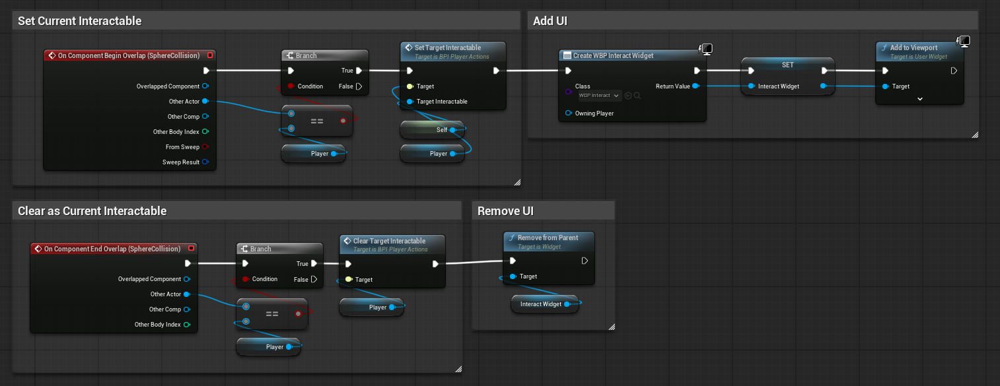
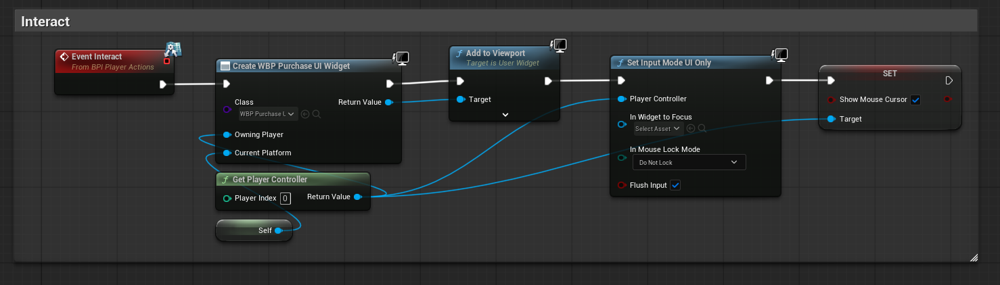
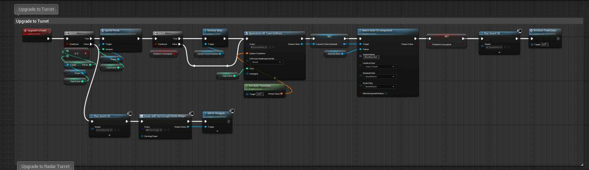
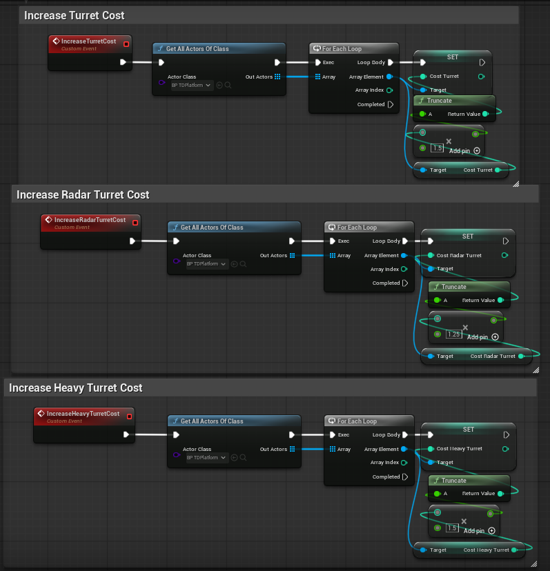

Modular World Space Interaction & Tower Placement Framework
Unreal Engine 5 | Runtime Actor Spawning, UI Communication & Economic Scaling
Overview
Engineered a modular, world space interaction and economic placement framework in Unreal Engine 5. The system allows players to interact with physical platforms in the level, validate currency constraints, purchase defensive structures at runtime, and dynamically scale tower costs to manage game balance.
Key Technical Features
- World Space Overlap and Interaction API: Uses sphere collision overlap events paired with Blueprint Interfaces (BPI_PlayerActions) to cleanly decouple player input from platform logic without hardcoded casting.
- Dynamic Economic Validation and Scaling: Implements a real time point check system (SpendPoints) that handles success/fail branches, provides audio/visual feedback, and dynamically scales future turret costs using multiplier scaling.
- Runtime Actor Instantiation and Socket Attachment: Spawns and attaches chosen turret classes directly to component sockets (RootSocket) on the platform at runtime, maintaining clean actor hierarchies.
Architecture Breakdown
1. Proximity Detection & UI Management

The platform’s SphereCollision handles OnComponentBeginOverlap and OnComponentEndOverlap. It checks if the overlapping actor is the player, sets a reference target interface, and dynamically creates or removes the interaction widget (WBP_Interact) in world space.
2. Interface Driven Input & Menu Spawning

When the player triggers the interaction event, it calls Event Interact via a Blueprint Interface, instantiates the purchase UI widget (WBP_PurchaseUI), shifts input mode to UI only, and displays the mouse cursor seamlessly.
3. Economic Validation & Runtime Spawning

The core transaction loop: It checks if player points is equal to or more than turret cost. If false, it triggers an error sound and an insufficient points widget. If true, it deducts points, destroys any existing attached actor on the platform, spawns the selected turret class at the platform's transform, and snaps it securely to the target socket (RootSocket).
4. Dynamic Cost Inflation System

Shows how the system scales economic pressure. Upon a successful turret purchase, a custom event iterates through active platform actors and multiplies the base cost of that specific turret type by a scalar factor (e.g., 1.5x), increasing strategic depth over time.
Future Implementations & Scalability
- In Place Turret Upgrades & Stat Scaling: Extend the placement framework to support runtime tier upgrades for active turrets. Rather than relying solely on placing new structures, players could invest points to upgrade existing turrets scaling parameters like fire rate, damage multipliers, and range dynamically via data assets to counter late game difficulty spikes without cluttering the map.